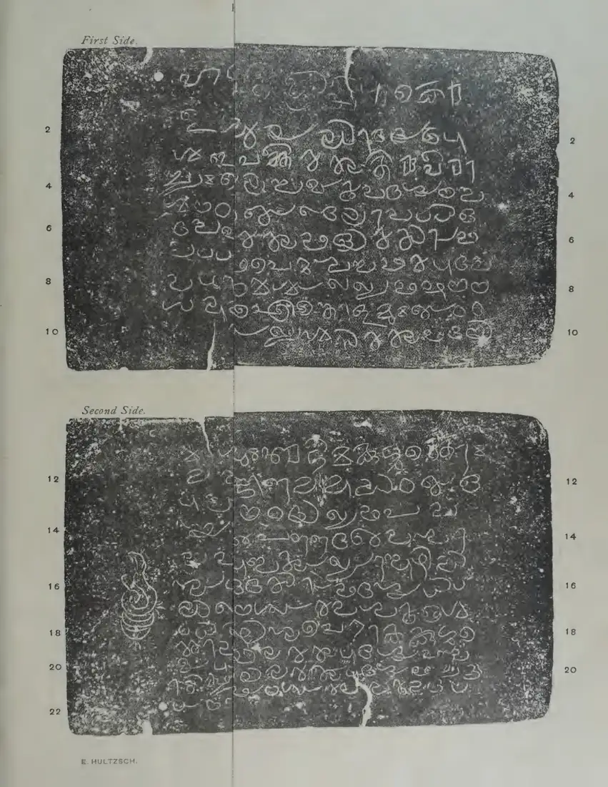

Kōṭṭayam plate of Vīra-Rāghava
KOTTAYAM PLATE OF VIRA-RAGHAVA.
BY V. VENKAYYA, M.A.
The subjoined inscription is engraved on both sides of a single copper-plate which measures 1' 27/8" in breadth by 41/8" in height and which is in the possession of the Syrian Christians at Kóṭtayam, the head-quarters of the northernmost division in the Travancore State. The plate has no seal; but, instead, a conch is engraved about the middle of the left margin of the second side. This inscription has been previously translated by Dr. Gundert.2 Mr. Kookel Keloo Nair also attempted a version of the grant.3 In republishing this record at the suggestion of the Editor, I do not wish to be understood as sitting in judgment over the version of such a distinguished scholar as the late lamented Dr. Gundert. But in the light of recent epigraphical researches a few alterations seem to be necessary in the translation, and the historical bearing of the document has also to be reconsidered. It is from these two points that I undertake to republish this inscription. In the translation I have mainly followed Dr. Gundert.
1 [Or perhaps— 'a descendant of the (spiritual) lineage of (the maṭha at) Karaṇjakhēṭa.'— E. H.]
2 Madras Journal of Literature and Science, Vol. XIII. Part I. p. 118. Dr. Gundert's translation is reprinted in Mr. Logan's Malabar, Vol. II. Appendix xii. p. cxvii. f.
3 Madras Journal, Vol. XXI. pp. 35 to 38.
Two alphabets are employed in the grant, viz. Malayâlam and Vatțeluttu. The Vatțeluttu characters of the inscription appear to exhibit a comparatively modern stage in the development of that alphabet. There seem to have been two local varieties of Vatțeluttu. One of them is represented by the Tamil portion of the Madras Museum plates of Jatilavarman1 and the small stone inscription which I have published from a photograph along with those plates.2 To the second class belong the Tirunelli plates of Bhâskara Ravivarman3 and the Cochin plates of the same king.4 The Kôttayam plates of Sthânu Ravi5 contain both of these two varieties of the Vatțeluttu character. The last two sides resemble the Madras Museum plates of Jatilavarman, while the preceding portion exhibits closer resemblance to the Cochin plates. The last two sides were probably written originally in the same alphabet as the rest; but subsequently the original writing was erased and what we now find on them was engraved. A few letters of the original writing are still visible here and there on these two sides. In the latter class, i.e. that to which the Cochin plates belong, the characters are more rounded than in the former, for example a, d, ñ, Ź, t, Ź and r. If we could ascertain why the last two sides of the Kôttayam plates of Sthânu Ravi are engraved in a slightly different character from the rest, we should be able to say if the two varieties of the Vatțeluttu alphabet coexisted or not. There is, however, very little doubt that the Vatțeluttu portion of the subjoined inscription exhibits a very late stage of development of the second variety. One Vatțeluttu letter has not yet been found in any other inscription. This is the é of Éránáđu (l. 20), in which the length is expressed by adding an additional curve to the left loop of the short letter.
As stated before, the second of the two different alphabets which are employed in the present inscription, is Malayâlam. A large number of words, some of which are of Sanskrit origin, are written in this alphabet. In Tamil inscriptions as well as in other Vatțeluttu records, it is generally the words of Sanskrit origin that are written in Grantha. But in the subjoined inscription many Tamil words also are engraved in the Malayâlam alphabet. The following is a list of all the words written in this character:—
Lines 1 and 2. From Hari of line 1 to yi of ádiy=áyi in line 2.
L. 3. śrī-Víra-Rághava-śakravattī.
L. 3 f. tiruv-iráchyam chellá°.
L. 5. haṇi of Róhaṇi.
L. 7. pe of the first peru; of peru the r is Tamil, and the u added to it is Malayâlam.
L. 9. pañcha-vádyamum śañkhum pagal-vílakkum, and aintólamum.
L. 11. ain-kammálareyum adima kuđuttóm.
L. 12. Iravikorttanukku, and Źda of koŹđ=alannu.
L. 14. śakkarayó°, kasturiyó°, vílakkennayóđu, and idayil.
L. 16. viśéshál.
L. 18. Iravikorttanukku.
L. 18 f. pé of pér=ága and °ga=kkuđuttó°.
L. 20 f. chandr-ádikshyaka°, and nálekku kuđuttóm.
L. 22. Nambi Chađeya, kaiy=e°, and °ttu.
1 Ind. Ant. Vol. XXII. p. 70.
2 ibid. p. 67.
3 ibid. Vol. XX. p. 290.
4 Above, Vol. III. Plate opposite p. 72.
5 A transcript and translation of this inscription were published by Dr. Gundert in the Madras Journal, Vol. XIII. Part I. pp. 123 to 135. It is probable that the name of the king in whose reign this grant was issued, is not Sthânu Ravi Gupta as made out by Dr. Gundert, but only Sthânu Ravi. Similar names would be Kôdai Ravi, which occurs among the signatories of the Cochin plates, and Bhâskara Ravi, the name of the king who issued those plates. The original reads Kó=Ttánu-Iravikkuttan. We have to analyse the compound Iravikkuttan not as Iravi and Kuttan (i.e. Gupta), but as Iravikku (the dative of Iravi) and tan, the genitive of the personal pronoun. This explanation of the name receives some support from the fact that in many other inscriptions the date is preceded by the dative case of the name of the king in whose reign the grant is made. Besides, according to Tamil usage, the k would not be doubled if Kuttan, the tadbhava of the Sanskrit Gupta, was the word that followed Iravi.
The Malayâlam alphabet of this inscription offers the following peculiarities. The group kl is expressed by adding a second horizontal stroke above the line which passes through the middle of the single letter. The vowel ai consists of three symbols, the second and third of which are considered sufficient in modern Grantha and Malayâlam to denote that vowel. The first two would now be used when the ai is prefixed to a consonant. This peculiarity occurs twice, viz. in aintôla (for andôla) (l. 9) and in aim-kammâlar (l. 11). Probably the engraver was only accustomed to Vattêluttu, but not well conversant with Malayâlam. The Tamil rough r is used twice, while in all other cases the Vattêluttu form occurs. These are: ru in peru (l. 7) and râ in pêr-âga (l. 18). In the first case the u is added exactly as in modern Malayâlam, i.e. by adding about the bottom of the letter a small semicircle. In the second case the â of râ is made a distinct symbol instead of its being added to the r as in Tamil. This shows that the writer had only a superficial knowledge of the Tamil characters as well as of the Malayâlam alphabet.
The language of the inscription is Tamil prose, mixed with a few Malayâlam forms, of which the following deserve to be noticed: irunnarula (l. 5) (for irundarula), alannu (l. 12) (for alandu); pâvâda (l. 9) (for pâvâdai), kuda (l. 10), adima (l. 11), para and nira (l. 12), sakkara, enna, ida, and ullada (l. 14), and ida (l. 16); and visêshâl (l. 16) (for visêshât). Kôyil-agam (l. 5) would in modern Tamil mean 'the inside of a temple.' In ancient Tamil inscriptions of the time of Râjarâja I.1 the word kôyil alone is used in the sense of 'a royal palace.' In the present inscription kôyilagam means 'a royal palace' as in modern Malayâlam. Of the words mentioned above, pâvâdai, kudai and parai occur also in the Cochin plates.2 The fact that they are there spelt exactly as in Tamil, and that in the subjoined grant they are spelt as in modern Malayâlam, suggests that the Kôttayam plate is later than the Cochin grant. The form ullada (l. 14) occurs in the former, while îrukkumadu and perumadu3 occur in the latter. This again points to the same conclusion. The transitional form enniñra (l. 13), which resembles the seyyinra of the Cochin plates,4 also deserves to be noted.
The inscription belongs to the reign of Vira-Râghava-Chakravartin, who claims to be a lineal descendant of Vira-Kêrala-Chakravartin. It is dated on the day of the nakshatra Rôhini, a Saturday, which corresponded to the twenty-second day of the solar month Mina of the year during which Jupiter was in Makara. On this day the king, while residing in the great palace,— probably at Kođungûlûr, which is mentioned further on (l. 15),—conferred the title of Manigrâmam and certain honours and rights connected therewith on Iravikkorran5 of Magôdaiyarpatțiñam, who was also called Sêramân-lôka-pperuñ-jetți.6 The oil-mongers and the five classes of artisans were made his slaves. The inscription then enumerates the sources of income available to the grantee as lord of the city—by which we have probably to understand Kođungûlûr—and defines the limits within which his authority was to extend over Kođungûlûr. It is further stated that the grant was not personal, but hereditary and perpetual. The witnesses to the grant are then mentioned, and the inscription closes with the signature of the goldsmith who engraved it and who boasted of the title Sêramân-lôka-pperun-datțan, i.e. 'the great goldsmith of the world (which belongs to) the Chêra king.'
The approximate date of the inscription is not easy to ascertain.7 Dr. Burnell,8 speaking of the9 date of this grant, remarked: "Some time ago I showed the passage to the ablest
1 South-Indian Inscriptions, Vol. II. p. 2, text line 5 of the first section.
2 Above, Vol. III. p. 68, text lines 9 and 10.
3 ibid. p. 68, text line 14.
4 ibid. p. 67.
5 The name Iravikorttan is evidently a vulgar form of the Tamil Iravikkorran, which means 'the sun-king.' According to the rules of Tamil Grammar the k of korran would have to be doubled in this compound.
6 Dr. Gundert has explained this name as 'the great merchant of the Chêramân world.' The meaning of this curious title is probably 'the great merchant (setți) of the world (which belongs to) the Chêra king.'
7 From elaborate astronomical calculations Mr. Kookel Keloo Nair concluded that A.D. 230 was unquestionably the date of the grant! See the Madras Journal, Vol. XXI. p. 39.
8 Ind. Ant. Vol. I. p. 229.
native astronomer in Southern India ('K. Krishna Jôsiyâr' in a footnote), and in two days he brought me the calculation worked out, proving that A.D. 774 is the only possible year." As Dr. Hultzsch has stated,1 this categorical assertion rests on the assumption that both the Kôttayam inscriptions must belong to the eighth century A.D. Professor Kielhorn has shown that there is another possible date ninety-four years before Dr. Burnell's.2 In the centuries following A.D. 774 there will probably be many more possible equivalents. The original plate, which I examined while at Kôttayam in the year 1895, does not appear to be so old as the eighth century A.D. Besides, the alphabet of the inscription does not seem to support Dr. Burnell's theory. As I have already remarked, the Vattelluttu characters of this grant appear to be more modern than those of the Cochin plates of Bhâskara Ravivarman and of the Tirunelli plates. It may not, however, be quite safe to base any conclusions on the Vattelluttu portion, because no dated inscriptions in that character are published and available for comparison. The Malayâlam portion clearly shows that the inscription cannot be so old as the eighth century A.D. The symbols for a, â, ai, ka, gha, ṭaṭta, and ya differ but slightly from their modern Malayâlam equivalents. The secondary form of the vowel u which is added to consonants, is almost the same as in modern Malayâlam. I have compared the Malayâlam portion of this inscription with several stone inscriptions from the Western Coast. One of the stones in the Trivandrum Museum contains a much defaced inscription3 dated in Kollam 239 (= A.D. 1064), which begins with some Sanskrit words written in ancient Malayâlam or Grantha. The alphabet employed in it is much more archaic than that of the subjoined grant. The vowel ai, which may be taken as a test letter and which occurs in the Trivandrum inscription,4 resembles the corresponding symbol in the Tirunelli plates.5 The only three inscriptions known to me whose characters bear some resemblance to those of the Vîra-Râghava plate, are Nos. 266, 269 and 270 of the Government Epigraphist's Collection for 1895. Of these the first is dated in Kollam 427 (= A.D. 1252), and the last in Śaka-Samvat 1296 (= A.D. 1374). From these facts I am led to think that the present inscription is much later than the Cochin grant and the Tirunelli plates as well as the Trivandrum inscription quoted above. If this conclusion is correct, the Vîra-Kêrala-Chakravartin whose descendant Vîra-Râghava professes to have been, may perhaps be identified with Jayasimha alias Vîra-Kêralavarman, who is mentioned in two inscriptions from the Western Coast as the founder of a race of kings,6 and with Jayasimha, the father of Ravivarman alias Kulasêkhara of the Arulâla-Perumâl and Raṅganâtha temple inscriptions.7 As Ravivarman, the son of Jayasimha, ascended the throne about A.D. 1300, Vîra-Râghava could not have lived before the 14th century A.D., which would be about the period to which palaeography leads us to assign the grant.
As stated before, Vîra-Râghava conferred the title of Manigrâmam on the merchant Iravikkorṇan. Similarly Añjuvaṇnam was bestowed by the Cochin plates on the Jew Joseph Rabbân.8 The old Malayâlam work Payyanûr Pattôla,9 which Dr. Gundert considered 'the oldest specimen of Malayâlam composition,' refers to Añjuvaṇnam and Manigrâmam. The context in which the two names occur in this work, implies that they were trading institutions. In the Kôttayam plates of Sthânu Ravi both Añjuvaṇnam and Manigrâmam are frequently mentioned.10 Both of them were appointed along with the Six-Hundred to be "the protectors" of the grant. They were "to preserve the proceeds of the customs duty as they were collected
1 ibid. Vol. XX. p. 289.
2 ibid. Vol. XXII. p. 139.
3 No. 275 of 1895 in Dr. Hultzsch's Annual Report for 1894-95.
4 The ai of Aiyapolil in l. 4.
5 Ind. Ant. Vol. XX. Plate opposite p. 291, l. 26.
6 Above, p. 146, note 2.
7 Above, pp. 145 and 148.
8 Above, Vol. III. p. 67.
9 Dr. Gundert's account of this poem, published in the Madras Journal, Vol. XIII. Part II. pp. 14-17, is reprinted in Mr. Logan's Malabar, Vol. II. Appendix xxi. p. clcxvii.
10 See Dr. Gundert's translation of this grant in the Madras Journal, Vol. XIII. Part I. pp. 130 to 134.
day by day”1 and “ to receive the landlord’s portion of the rent on land.” “ If any injustice be done to them, they may withhold the customs and the tax on balances and remedy themselves the injury done to them. Should they ‘themselves commit a crime, they are themselves to have the investigation of it.” To Añjuvanṇam and Mañigrâmam was granted the free-hold of the lands of the town (of Kollam ?). From these extracts and from the reference in the Payyanûr Pattôla it appears that Añjuvanṇam and Mañigrâmam were semi-independent trading corporations like the Vaļañjiyar who will be noticed below.2 The epithet setți (merchant) given to Ravikkorṇan, the trade rights granted to him, and the sources of revenue thrown open to him as head of Mañigrâmam, confirm the view that the latter was a trading corporation. There is nothing either in the Cochin grant or in the subjoined inscription to show that Añjuvanṇam and Mañigrâmam were, as was believed by Dr. Gundert and others,3 Jewish and Christian principalities, respectively. It was supposed by Dr. Burnell4 that the plate of Vîra-Râghava created the principality of Mañigrâmam and the Cochin plates that of Añjuvanṇam and that, consequently, the existence of these two grants is presupposed by the plates of Sthânu Ravi which mention both Añjuvanṇam and Mañigrâmam very often. The Cochin plates did not create Añjuvanṇam, but conferred the honours and privileges connected therewith to a Jew named Joseph Rabbân. Similarly, the rights and honours associated with the other corporation, Mañigrâmam, were bestowed at a later period on Ravikkorṇan. Therefore Añjuvanṇam and Mañigrâmam must have existed as institutions even before the earliest of these three copper-plates was issued. It is just possible that Ravikkorṇan was a Christian by religion. But his name and title give no clue in this direction,5 and there is nothing Christian in the document except its possession by the present owners.
Ravikkorṇan was to have authority over Kođungûlûr, which is the present Kođunñalûr (Cranganore in the Cochin State). He was a native of Magôdaiyarpatținam. In Dr. Gundert's translation this place is spelt Mahôdêvarpattnam.6 This has been further changed into Mahâdêvarpatținam.7 The Śaiva saint Sundaramûrti Nâyaṇâr mentions in his Dêvâram a place called Magôdai which was situated on the sea coast and not far from Tiruvañjaikkalam near Cranganore.8 In an inscription of the Chôla king Râjâdhirâjadêva, Râjèndra-Chôla, one of his predecessors, is said to have captured “Magôdai in the west.”9 In Sêkkilâr's Periyapurânam Magôdai is identified with Kođungôlûr, the modern Kođunñalûr, and said to belong to king Kôdai.10 Magôdai was thus another name of Cranganore. It is very unlikely that the Magôdaiyarpatținam of the subjoined grant is identical with Kođungûlûr, because the
1 Aṇr=aṇru pađum=ulgu Añjuvanṇamum Mañikkirâmamum ilachchichchu vaippadâgavum; l. 46 f. of Dr. Gundert's transcript on p. 128 of the volume quoted in the preceding note. Dr. Gundert read ulagu instead of ulgu, and hence his translation differs from the one adopted here. On the meaning of the word ulgu see aboțe, Vol. III. p. 69, note 4.
2 See p. 296, note 2.
3 See the Madras Journal, Vol. XIII. Part I. p. 116, and Mr. Logan's Malabar, Vol. I. p. 111.
4 Ind. Ant. Vol. III. p. 333 f.
5 On this name Dr. Gundert first said: “Iravi Corttan must be a Nasrani name, though none of the Syrian priests whom I saw could explain it or had ever heard of it;” see the Madras Journal, Vol. XIII. Part I. p. 120. Subsequently (p. 146) he added: “I had indeed been startled by the Indian looking name 'Iravi Corttan,' which does not at all look like the appellation of a Syrian Christian: still I thought myself justified in calling Mañigrâmam a Christian principality—whatever their Christianity may have consisted in—on the ground that from Menezes' time, these grants had been regarded as given to the Syrian Colonists.” It thus appears that Dr. Gundert himself was not quite sure whether Mañigrâmam was a Christian principality or not. Mr. Kookel Keloo Nair considered Iravikkorṇan “a mere title in which no shadow of a Syrian name is to be traced;” Madras Journal, Vol. XXI. p. 40.
6 Madras Journal, Vol. XIII. Part I. p. 118.
7 Mr. Logan's Malabar, Vol. I. p. 205.
8 Kadalangarai-mêy=Magôdaiy=añiy=âr-polîl=Añjaikkalatt=appanê in the hymn on Tiruvañjaikkalam.
9 Dr. Hultzsch's Annual Report for 1894-95, p. 3.
10 Kôdaiy=arašar Magôdai; Periyapurânam, Madras edition of 1870, p. 328, verse 4.
same place could not have been called Kođungûlûr in one part of the inscription and Magôdaiyarpattinam in another. Perhaps Magôdaiyarpattinam was a quarter or suburb of Cranganore. But the derivation of the name is indisputable. Magôdaiyarpattinam means 'the town of the great Chêra king,' and is correctly spelt in the present grant. It is therefore unnecessary to correct it into Mahôdêvarpattinam or Mahâdêvarpattinam.
At the end of the inscription the villagers of Šôgiram and Pañriyûr are mentioned as witnesses to the grant. Šôgiram is identical with the modern Šukapuram in the Ponâni tâluka of the Malabar district,1 which in its inscriptions is called Šôgiram (Nos. 208, 209, 210 and 211 of 1895). Pañriyûr is identical with Panniyûr, another village in the Ponâni tâluka.2 Šukapuram and Panniyûr are said to have been the original Nambûdiri settlements in Malabar.3 Of the districts mentioned at the end of the grant, Vênâđu is, as is well known, identical with Travancore. Êrânâđu and Valluvanâđu are the old names of the two tâlukas Ernâđ and Valluvanâđ of the Malabar district. Vênâđu, Êrâlanâđu (an earlier form of Êrânâđu) and Valluvanâđu are also mentioned in the Cochin grant.4 Dr. Gundert has identified Ôdunâđu with Ônâđu whose capital was Kâyangulam.5
TEXT.6
First Side.
1 Hari śrî Mahâgaṇapatê7 [na]ma[h*] [||*] Šrî-pûpâla-narapati8 [śrî]-Vira-Kêra-
2 ła-šakravartti9 âdiy=âyi murà-murâyiê pala-nûrâyiratt-â[n]đu
3 šengôl nađattâyiniñra śrî-Vira-Râghava-šakrava[r*]ttikku9 tiruv-irâ-
4 chyam10 chellâyiniñra Makarattul Viyâlam 11Miña-nâyarù irubattoñru
5 šenñra Ša[n]i Rôhañi-nâl perun-gôyilagatt=irunnarula Magôdaiyarpattina-
6 ttu Iravikorttanñ=âya Šêramân-lôka-pperuñ-jettikku Mañikkirâma-
7 patta[n]=guđuttôm [*] vilâv-âdeyum pavaña-ttângum perù pêrum kađut[t]u12
8 va[l]eñjiyamu[m*] valañjiyattil [ta]ñi-chchețtum mur-chchollum muñ-na-
9 đeyum pañcha-vâdyamum šamkhum pagal-vilakkum pâvâđayum aintôlamum13
koñra-
10 kkuđayum vađuga-ppařeyum iđupađi-tôraṇamum nâlu šê[r]ikkum tañi-
Second Side.
11 chechețtum kuđuttôm [*] vâniyarum aim-kammâlareyum adima kuđuttôm [*]
12 nagarattukku karttâv=âya Iraviko[r]ttanukku parà konđ=alannu nirà kon-
13 đu [t]ûkki nûl konđu vâgi epñinñradilum eđukkiñradilum u[pa]-
14 nôđu14 šakkarayôđu kasturiyôđu15 vilakkenñayôđu iđayil ullada eppêr-
15 [p]pattadinum taragum adin=ađutta šungamum kûđa Kođungûlûr ałivi-
16 yôđu gôpurattôđu visêshâl nâlu tałiyum tałikk=ađutta kirâmattôđ=ida-
17 yil nir16 mudal=âyi šepp=êđu ełudi kuđuttôm [*] Šêramân-lôka-pperuñ-je-
18 tțiy=âna Iravikorttanukku ivañ makka! makka!kkê vałi-vałiyê pêr=âga=kkuđu-
19 ttôm17 [*] id=ařiyum Pañriyûr=kkirâmamu[m*] Šôgira=kkirâmamum ařiya=
kkuđuttô[m] [*] Vê-
1 Mr. Sewell's Lists of Antiquities, Vol. I. p. 251.
2 ibid. p. 251. The name of the village is here by mistake spelt ' Punnayûr.'
3 Mr. Logan's Malabar, Vol. I. p. 120.
4 Above, Vol. III. p. 68.
5 Madras Journal, Vol. XIII. Part I. p. 124.
6 From ink-impressions prepared by myself in 1895.
7 Read ganapatayê.
10 Read irâfjyam.
13 Read andôlamum.
16 Read ntr.
8 Read bhâpâla.
11 Read Mina.
14 Read uppinôđu.
17 The ê of ttô is engraved at the end of the previous line.
9 Read chakra.
12 Read kadattu ?
18 Read kastûriyôđu.
20 nāđum Ôdunāđum=ařiya=kkuđ[u]ttôm [[*]] Êrānāđum Valĵuvanāđum=ařiya=kku[du]ttôm [[*]] [Chandr]-.
21 1á[d]ikshyaka[l]=uĵla nâlekku kuđuttôm [[*]] ivargal=ařiya šepp=éđ=eĵudiya
Séramān-lôka-pp[e]run-[d]aĵt-
22 tāp Nambi Chađeyaŵ [k]aiy=eĵuttu [||*]]
TRANSLATION.
(Line 1.) Hari ! Prosperity ! Adoration to the great Gaṇapati ! On the day of (the nakshatra) Rôhiñi, a Saturday after the expiration of the twenty-first (day) of the solar month Mîna (of the year during which) Jupiter (was) in Makāra, while the glorious Vira-Râghava-Chakravartin,— (of the race) that has been wielding the sceptre for several hundred-thousands of years in regular succession from the glorious king of kings, the glorious Vira-Kêrala-Chakravartin,— was ruling prosperously ;—
(L. 5.) While (we were) pleased to reside in the great palace, we conferred the title of Mañigrâmam on Iravikorttan alias Séramân-lôka-pperuñ-jeĵti of Magôdaiyarpaĵtinam.
(L. 7.) We (also) gave (him) (the right of) festive clothing, house pillars, the income that accrues, the export trade (?),2 monopoly of trade, (the right of) proclamation, forerunners, the five musical instruments,3 a conch, a lamp in day-time, a cloth spread (in front to walk on), a palanquin, the royal parasol, the Telugu (?) drum, a gateway with an ornamental arch, and monopoly of trade in the four quarters (sêri).
(L. 11.) We (also) gave the oil-mongers and the five (classes of) artisans as (his) slaves.
(L. 12.) We (also) gave, with a libation of water,4— having (caused it to be) written on a copper-plate,— to Iravikorttan, who is the lord of the city, the brokerage on (articles) that may be measured with the para, weighed by the balance or measured with the tape, that may
1 Read đdityargaĵ. The secondary form of d of đdikshya, which ought to have been engraved after ndra at the end of the previous line, is inscribed at the beginning of this line.
2 The exact meaning of the word valañjiyam (or valañjiyam, l. 8) calls for some remarks. According to Dr. Gundert's Malayálam Dictionary, valiñjiyaŵ means 'a barber or hair-cutter.' In his translation of this inscription Dr. Gundert has rendered the word valañjiyam by 'curved sword (or dagger).' The word valañjiyar occurs also in No. 9 of Mr. P. Sundaram Pillai's Early Sovereigns of Travancore, where he explains the word as meaning 'feudal barons.' In an unpublished Tamil inscription which was received by Dr. Hultzsch from Mr. Bell, C.C.S., Archæological Commissioner of Ceylon, the term valañjeyar appears to denote a corporation consisting of various classes of merchants. In the Epigraphia Carnataca is published a mutilated Tamil inscription (Malavalli Táluk, No. 74) which begins with the same phrases as the Ceylon inscription quoted above, though it does not contain the word valañjiyar. In his Mysore Inscriptions Mr. Rice has published three Kanarese inscriptions from Baligâmi (Nos. 38, 55 and 56) which refer to the same corporation of merchants. The description of the guild in these inscriptions is similar to that of the Ceylon inscription, but is more detailed. In one of them (No. 38) the members are styled 'protectors of the vitra-balañji rights.' In the second (No. 55) they are called 'baṇañjigas,' and are said to follow the baṇañju dharma. The title mañigdāra is prefixed to the names of four of the merchants (seĵti) who, at the time of the inscription, were members of the guild. This name mañigdāra is probably connected with the Mañigrâmam of our grant. The third inscription from Baligâmi calls the members of the guild 'the protectors of the vitra-bāṇañji dharma.' In this inscription as in the one from Ceylon quoted above, there is a list of the various classes of merchants which composed the guild. In Kanarese baṇajiga is still used to denote a class of merchants. In Telugu the word balija or balijiga has the same meaning. It is therefore probable that the words valañjiyam, valañjiyar, balañji, baṇañji, baṇañjiga and balija are cognate and derived from the Sanskrit vañij. Accordingly valañjiyant probably means here 'trade.' Kađuttu is perhaps a mistake for kađattu. If this correction is accepted, kađattu valañjiyam would mean 'export trade.'
3 The expression pañcha-vádya confirms the correctness of the explanation of the frequent title pañcha-mahđābada by 'the sounds of five musical instruments;' see Ind. Ant. Vol. XIV. p. 202, note 42, and Dr. Fleet's Gupta Inscriptions, p. 296 ff., note.
4 Dr. Gundert has translated the phrase ntr mudal-áyi by 'as eternal.' But it is evidently a Tamil equivalent of the Sanskrit udaka-púrvam, which occurs in many grants and means 'with a libation of water.'
Plate 1 is bound after this page.
be counted or weighed, and on all other (articles) that are intermediate,—including salt, sugar, musk (and) lamp oil,— and also the customs levied on these (articles) between the river mouth of Kođungûlûr and the gate (gôpura),— chiefly between the four temples (tali) and the village adjacent to (each) temple.
(L. 17.) We gave (this) as property to Sêramân-lôka-pperuñ-jetți alias Iravikorttan and to his children's children in due succession.
(L. 19.) (The witnesses) who know this (are):— We gave (it) with the knowledge of the villagers of Pañriyûr and the villagers of Sôgiram. We gave (it) with the knowledge (of the authorities) of Vênâdu and Ôdunâdu. We gave (it) with the knowledge (of the authorities) of Êrânâdu and Valluvanâdu. We gave (it) for the time that the moon and the sun shall exist.
(L. 21.) The hand-writing of Sêramân-lôka-pperun-dattân Nambi Şadeyan, who wrote (this) copper-plate with the knowledge of these (witnesses).
